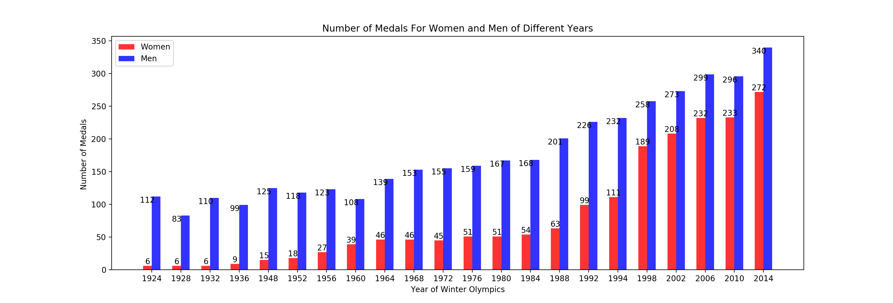
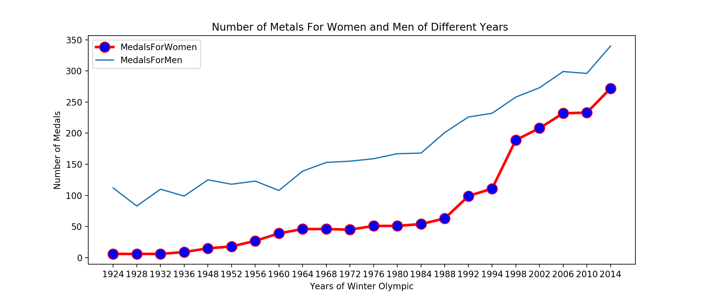
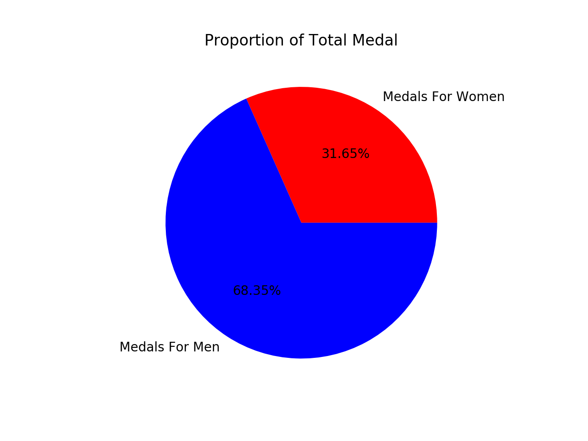
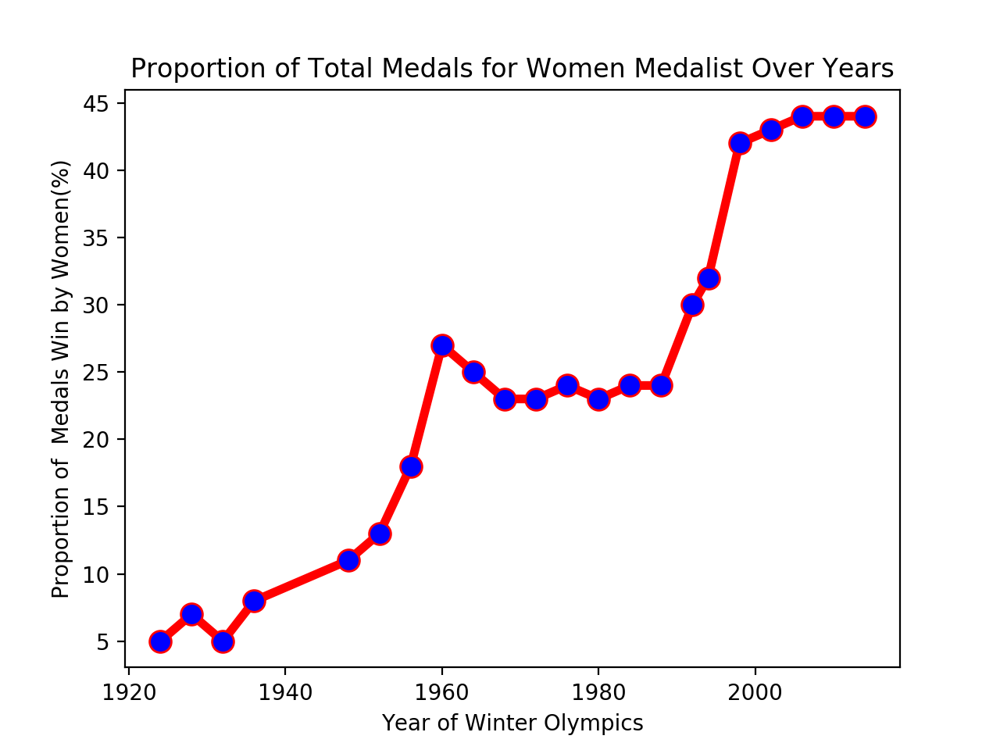
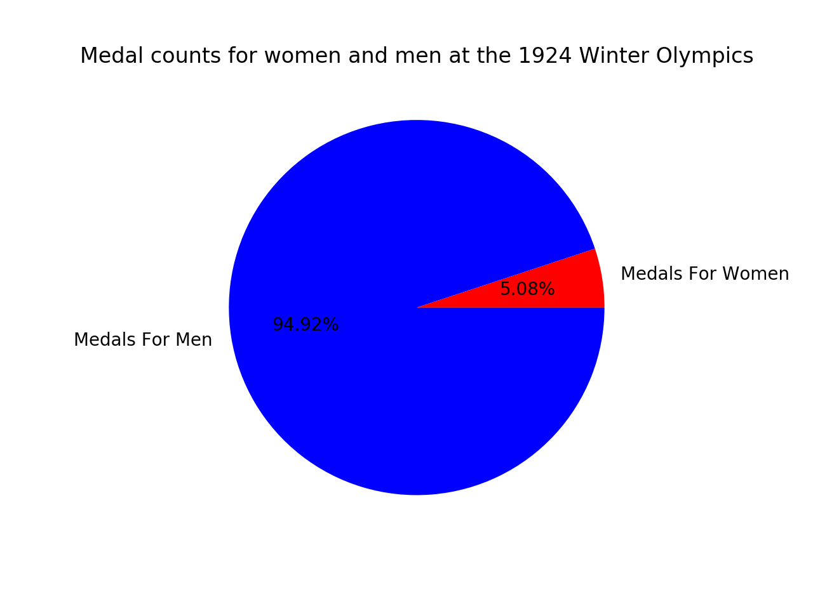
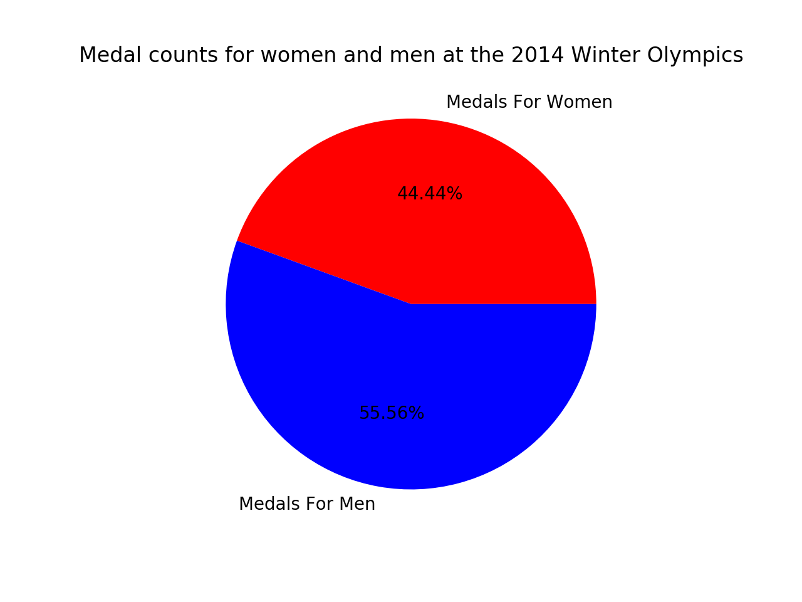

Women VS Men
In the early days of the Olympic Games, many NOCs sent fewer female competitors. Whith the IOC’s commitment to creating more opportunities for female athletes by expanding the Olympic programme to include more women’s events,the rate of medals won by women in the Olympics has been increasing.
Proportion of Medals : Women
The pie chart show the comparison of amount of medals won by men and women althetes between the 1924 to 2014 Winter Olympics. Overall, the proportion of medals for men which accounted for 68.35 percent of total medals were twice as many medals as women.
 The number of women competing at the Games has increased significantly over the last 90 years – from 5 percent at 1924 to a record 44 percent at 2014.
Proportion of Medals: 1924 VS 2014
 Number of Medals Won By Women are far away from the men at the begining. While the success of the IOC Women in Sport Policy is noticeable in terms of women’s participation in the Games.The number of female athletes who win the metals continued to grow at a high rate.The number of medals won by female athletes reached its highest point during the most recent Olympiad (Sochi 2014), in which slightly more than 44% of medals belong to women athletes. Number of Medals Won By Women are close to Men(56 percent) at the End.